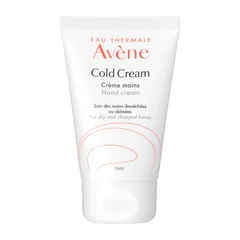
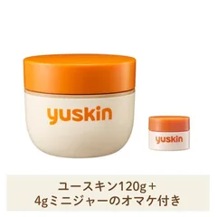
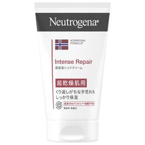

昼にベタつかないものがほしい人

アベンヌ
薬用ハンドクリーム 51g 無香料
51g
¥990税込・出典掲載価格
選び方と声
- 選ぶ条件：塗ってすぐスマホやキーボードを触れる使い心地・無香料。昼に洗うたび少しずつ足す用
- わりとすぐサラサラになってスマホを触っても気にならないという声があった
気になる声気になる点：保湿の強さは弱めに感じるという声がある。割れている日はこれだけでは足りないかもしれない
販売価格・容量・送料はリンク先でご確認ください
THE COSME EDIT / 2026.10.28
動画と同じ写真・名前・順番で並べています。見出しは順位ではなく、選ぶ条件です。3つそろえる前提ではありません。夜にハンドクリームを塗っているのに、水仕事のたびに手が荒れる人が、クリームを替える前に、洗うたびに少し足すこと、洗ったあとの順番（拭く・潤す・のせる）、お湯の温度（ぬるま湯）、水仕事の手袋を見直す、という話を会話でまとめました。まずは買わなくてもできること（ぬるま湯で洗う・タオルを押し当てて拭く・洗い物をまとめて最後に塗る）を試してから、自分に合う1つか2つだけ選んでください。ガールズちゃんねるの「【つらい】ハンドケア・ハンドクリーム 水仕事の方情報交換しましょう！」などのトピから声を集め、資生堂・花王・スキンケア大学（クリニック院長監修）の記載と各商品ページの表示で確かめたものです。治る・荒れなくなると約束する話ではありません。ひび割れて血が出る・かゆみが強い・よくならないときは皮膚科で相談してください。肌に合わないときは使うのをやめてください。
03 ITEMS 動画で紹介した商品
動画では商品のほかに、洗うたびに少し足す考え方（資生堂）、洗ったあとの順番（水分を拭く・化粧水をなじませる・クリーム）、熱いお湯を避けてぬるま湯で洗うこと、ゴム手袋（敏感なら下に綿）、洗い物をまとめて最後に塗ること、尿素入りクリームがしみるという声、皮膚科に行く目安も話しています。
価格は出典掲載時のものです。楽天の現在価格とは異なる場合があります。

アベンヌ
51g
¥990税込・出典掲載価格
選び方と声
気になる声気になる点：保湿の強さは弱めに感じるという声がある。割れている日はこれだけでは足りないかもしれない
販売価格・容量・送料はリンク先でご確認ください

ユースキン
120g+4g
¥980税込・出典掲載価格
選び方と声
気になる声気になる点：においとベタつきの感じ方は分かれる。ひび割れが深くてしみるときは無理に塗り込まない
販売価格・容量・送料はリンク先でご確認ください

ニュートロジーナ
50g
¥476税込・出典掲載価格
選び方と声
気になる声気になる点：塗ったあとの感じ方（しっとり・重い）は人によって違う。はじめは夜に、手の甲で試す
販売価格・容量・送料はリンク先でご確認ください
SOURCE & NOTES
集計期間：2026年10月28日に確認
価格は2026年10月28日に確認した税込価格です（掲載時点）。3品とも Amazon.co.jp が販売元の商品の価格です。価格は変わることがあります。購入前にリンク先でご確認ください。見出しは選ぶ条件で、順位ではありません。